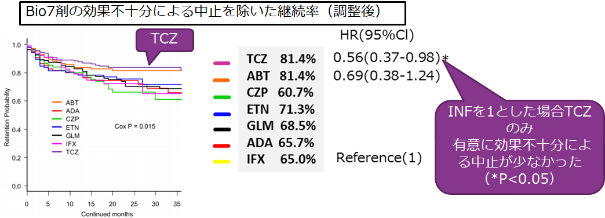

Bio7製剤中、効果不十分が原因による中止はTCZが最も少なかった（ANSWERコホート）
大阪大学、大阪医科大学、京都大学、神戸大学、奈良医科大学、関西医科大学、大阪赤十字病院にて、実臨床下におけるBIO7剤の継続率の比較を行った

投与3年後の効果不十分による中止を除いた継続率は、TCZとABTで81.4％と同じ
しかし、ハザード比を見ると有意に効果不十分による中止が少ないのはTCZだけである
大阪大学、大阪医科大学、京都大学、神戸大学、奈良医科大学、関西医科大学、大阪赤十字病院にて、実臨床下におけるBIO7剤の継続率の比較を行った
投与3年後の効果不十分による中止を除いた継続率は、TCZとABTで81.4％と同じ
しかし、ハザード比を見ると有意に効果不十分による中止が少ないのはTCZだけである